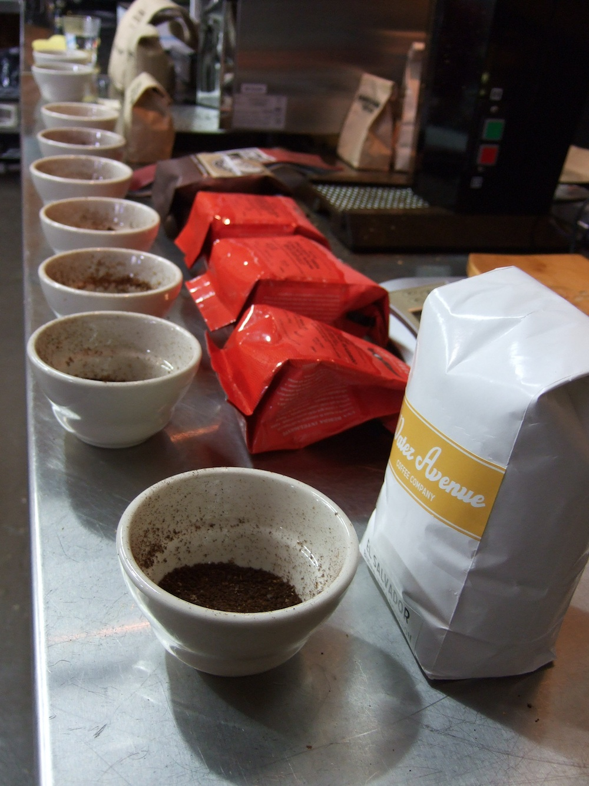
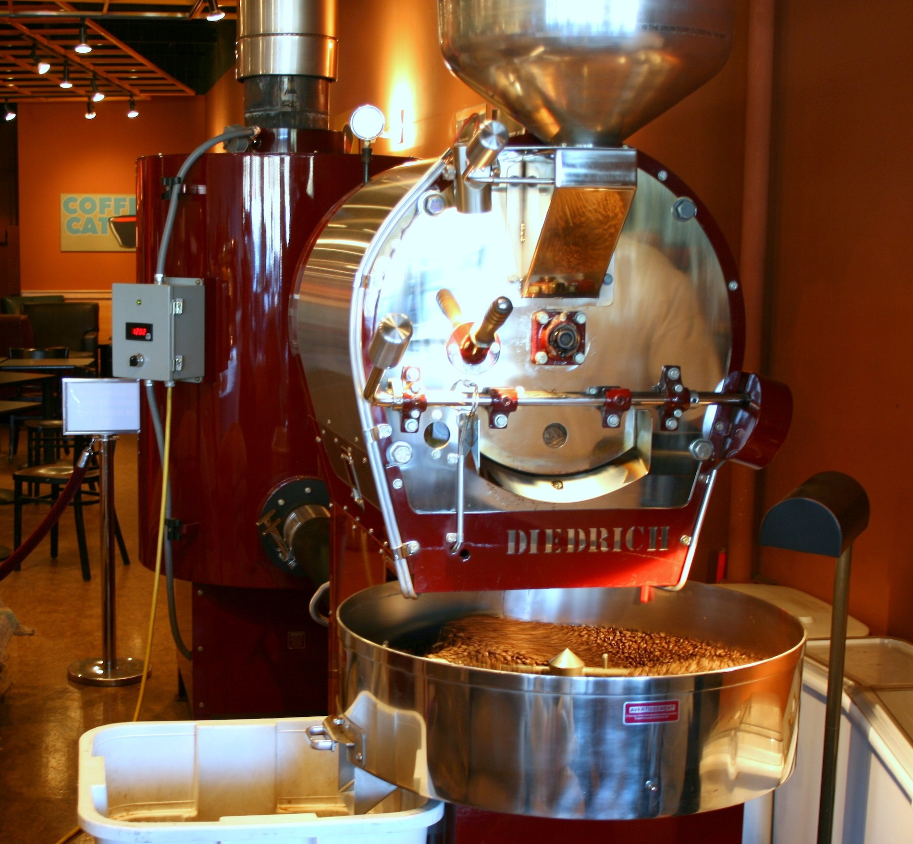

Stir the Espresso: Objects, Mutation, and State
Life measured out by coffee spoons
So far, we have discussed what many call “pure functional” programming, where every expression is necessarily idempotent, because we have no way of changing state within a program using the tools we have examined.
It’s time to change everything.
Reassignment and Mutation
Like most imperative programming languages, CoffeeScript allows you to re-assign the value of variables. The syntax is familiar to users of most popular languages:
do (age = 49) ->
age = 50
age
#=> 50
We took the time to carefully examine what happens with bindings in environments. Let’s take the time to fully explore what happens with reassigning values to variables. The key is to understand that we are rebinding a different value to the same name in the same environment.
So let’s consider what happens with a shadowed variable:
do (age = 49) ->
do (age = 50) ->
# yadda yadda
age
#=> 49
Binding 50 to age in the inner environment does not change age in the outer environment because the binding of age in the inner environment shadows the binding of age in the outer environment. We go from:
{age: 49, '..': global-environment}
To:
{age: 50, '..': {age: 49, '..': global-environment}}
Then back to:
{age: 49, '..': global-environment}
However, if we don’t shadow age, reassigning it in a nested environment changes the original:
do (age = 49) ->
do (height = 1.85) ->
age = 50
age
#=> 50
Like evaluating variable labels, when a binding is rebound, CoffeeScript searches for the binding in the current environment and then each ancestor in turn until it finds one. It then rebinds the name in that environment.
mutation and aliases
Now that we can reassign things, there’s another important factor to consider: Some values can mutate. Their identities stay the same, but not their structure. Specifically, arrays and objects can mutate. Recall that you can access a value from within an array or an object using []. You can reassign a value using [] as well:
do (oneTwoThree = [1, 2, 3]) ->
oneTwoThree[0] = 'one'
oneTwoThree
#=> [ 'one', 2, 3 ]
You can even add a value:
do (oneTwoThree = [1, 2, 3]) ->
oneTwoThree[3] = 'four'
oneTwoThree
#=> [ 1, 2, 3, 'four' ]
You can do the same thing with both syntaxes for accessing objects:
do (name = {firstName: 'Leonard', lastName: 'Braithwaite'}) ->
name.middleName = 'Austin'
name
#=> { firstName: 'Leonard',
# lastName: 'Braithwaite',
# middleName: 'Austin' }
We have established that CoffeeScript’s semantics allow for two different bindings to refer to the same value. For example:
do (allHallowsEve = [2012, 10, 31]) ->
halloween = allHallowsEve
Both halloween and allHallowsEve are bound to the same array value within the local environment. And also:
do (allHallowsEve = [2012, 10, 31]) ->
do (allHallowsEve) ->
# ...
There are two nested environments, and each one binds the name allHallowsEve to the exact same array value. In each of these examples, we have created two aliases for the same value. Before we could reassign things, the most important point about this is that the identities were the same, because they were the same value.
This is vital. Consider what we already know about shadowing:
do (allHallowsEve = [2012, 10, 31]) ->
do (allHallowsEve) ->
allHallowsEve = [2013, 10, 31]
allHallowsEve
#=> [ 2012, 10, 31 ]
The outer value of allHallowsEve was not changed because all we did was rebind the name allHallowsEve within the inner environment. However, what happens if we mutate the value in the inner environment?
do (allHallowsEve = [2012, 10, 31]) ->
do (allHallowsEve) ->
allHallowsEve[0] = 2013
allHallowsEve
#=> [ 2013, 10, 31 ]
This is different. We haven’t rebound the inner name to a different variable, we’ve mutated the value that both bindings share.
The same thing is true whenever you have multiple aliases to the same value:
do (greatUncle = undefined, grandMother = undefined) ->
greatUncle = {firstName: 'Leonard', lastName: 'Braithwaite'}
grandMother = greatUncle
grandMother['firstName'] = 'Lois'
grandMother['lastName'] = 'Barzey'
greatUncle
#=> { firstName: 'Lois', lastName: 'Barzey' }
This example uses the letrec pattern for declaring bindings. Now that we’ve finished with mutation and aliases, let’s have a look at it.
letrec
One way to exploit reassignment is to “declare” your bindings with do and bind them to something temporarily, and then rebind them inline, like so:
do (identity = undefined, kestrel = undefined) ->
identity = (x) -> x
kestrel = (x) -> (y) -> x
This pattern is called letrec after the Lisp special form. Recall that let looks like this in CoffeeScript:
do (identity = ((x) -> x), kestrel = (x) -> (y) -> x) ->
To see how letrec differs from let, consider writing a recursive function13 like pow. pow takes two arguments, n and p, and returns n raised to the pth power. For simplicity, we’ll assume that p is an integer.
do (pow = undefined) ->
pow = (n, p) ->
if p < 0
1/pow(n, -p)
else if p is 0
1
else if p is 1
n
else
do (half = pow(n, Math.floor(p/2)), remainder = pow(n, p % 2)) ->
half * half * remainder
In order for pow to call itself, pow must be bound in the environment in which pow is defined. This wouldn’t work if we tried to bind pow in the do itself. Here’s a misguided attempt to create a recursive function using let:
do (odd = (n) -> if n is 0 then false else not odd(n-1)) ->
odd(5)
To see why this doesn’t work, recall that this is equivalent to writing:
((odd) ->
odd(5)
)( (n) -> if n is 0 then false else not odd(n-1) )
The expression (n) -> if n is 0 then false else not odd(n-1) is evaluated in the parent environment, where odd hasn’t been bound yet. Whereas, if we wrote odd with letrec, it would look like this:
do (odd = undefined) ->
odd = (n) -> if n is 0 then false else not odd(n-1)
odd(5)
Which is equivalent to:
((odd) ->
odd = (n) -> if n is 0 then false else not odd(n-1)
odd(5)
)( undefined )
Now the odd function is bound in an environment that has a binding for the name odd. letrec also allows you to make expressions that depend upon each other, recursively or otherwise, such as:
do (I = undefined, K = undefined, T = undefined, F = undefined) ->
I = (x) -> x
K = (x) -> (y) -> x
T = K
F = K(I)
takeaway
 CoffeeScript permits the reassignment of new values to existing bindings, as well as the reassignment and assignment of new values to elements of containers such as arrays and objects. Mutating existing objects has special implications when two bindings are aliases of the same value.
CoffeeScript permits the reassignment of new values to existing bindings, as well as the reassignment and assignment of new values to elements of containers such as arrays and objects. Mutating existing objects has special implications when two bindings are aliases of the same value.
The letrec pattern allows us to bind interdependent and recursive expressions.
Normal Case Variables
Now that we’ve discussed reassignment, it’s time to discuss assignment.
In CoffeeScript, the syntax for assignment is identical to the syntax for reassignment:
birthday = { year: 1962, month: 6, day: 14 }
The difference comes when there is no value bound to the name birthday in any of the user-defined environments. In that case, CoffeeScript creates one in the current function’s environment. The current function is any of the following:
- A function created with an arrow operator (
->that we’ve seen, and=>that we’ll see when we look at objects in more detail). - A function created with the
dosyntax. - When compiling CoffeeScript in files, an empty
do ->is invisibly created to enclose the entire file.
One good consequence of this feature is that you can dispense with all of the nested do (...) -> expressions you’ve seen so far if you wish. You can boldly write things like:
identity = (x) -> x
kestrel = (x) -> (y) -> x
truth = kestrel
falsehood = kestrel(identity)
You can also do your assignments wherever you like in a function, not just at the top. Some feel this makes code more readable by putting variable definitions closer to their use.
There are two unfortunate consequences. The first is that a misspelling creates a new binding rather than resulting in an error:
do (age = 49) ->
# ...
agee = 50
# ...
age
#=> 49, not 50
The second is that you may accidentally alias an existing variable if you are not careful. If you’re in the habit of creating a lot of your variables with assignments rather than with do, you must be careful to scan the source of all of your function’s parents to ensure you haven’t accidentally reused the name of an existing binding.14
Comprehensions

Cupping Grinds
If you’re they type of person who can “Write Lisp in any language,” you could set about writing entire CoffeeScript programs using let and letrec patterns such that you don’t have any normal case variables.
But as you dive into CoffeeScript, you’ll discover many helpful features that aren’t “Lisp-y.” Eschewing them is to cut against CoffeeScript’s grain. One of those features is the comprehension, a mechanism for working with collections that was popularized by Python.
Here’s a sample comprehension:
"Hello #{name}" for name in ['algernon', 'sabine', 'rupert', 'theodora']
#=> [ 'Hello algernon',
# 'Hello sabine',
# 'Hello rupert',
# 'Hello theodora' ]
An alternate syntax for the same thing that supports multiple expressions is:
for name in ['algernon', 'sabine', 'rupert', 'theodora']
"Hello #{name}"
#=> [ 'Hello algernon',
# 'Hello sabine',
# 'Hello rupert',
# 'Hello theodora' ]
Here’s a question: There’s a variable reference name in this code. Is it somehow bound to a new environment in the comprehension? Or is it a “normal case variable” that is either bound in the current function’s environment or in a parent function’s environment?
Let’s try it and see:
name = 'clyde'
"Hello #{name}" for name in ['algernon', 'sabine', 'rupert', 'theodora']
name
#=> 'theodora'
It’s a normal case variable. If it was somehow ‘local’ to the comprehension, name would still be clyde as the comprehension’s binding would shadow the current environment’s binding. This is usually fine, as creating a new environment for every comprehension could have performance implications.
However, there are two times you don’t want that to happen. First, you might want name to shadow the existing name binding. You can use do to fix that:
name = 'clyde'
do (name) ->
"Hello #{name}" for name in ['algernon', 'sabine', 'rupert', 'theodora']
name
#=> `clyde`
When you put a name in the argument list for do -> but you don’t supply a value, CoffeeScript assumes you are deliberately trying to shadow a variable. It acts as if you’d written:
name = 'clyde'
((name) ->
"Hello #{name}" for name in ['algernon', 'sabine', 'rupert', 'theodora']
)(name)
name
#=> `clyde`
So technically, the inner name will be bound to the same value as the outer name initially, but as the comprehension is evaluated, that value will be overwritten in the inner environment but not the outer environment.
preventing a subtle comprehensions bug
The second time you don’t want a comprehension’s variable to be normal case is more subtle, but a source of errors for the unwary. Consider this variation of the above comprehension:
for myName in ['algernon', 'sabine', 'rupert', 'theodora']
(yourName)-> "Hello #{yourName}, my name is #{myName}"
Now what we want is four functions, each of which can generate a sentence like “Hello reader, my name is rupert”. We can test that with a comprehension:
fn('reader') for fn in for myName in [
'algernon'
'sabine'
'rupert'
'theodora'
]
(yourName) -> "Hello #{yourName}, my name is #{myName}"
#=> [ 'Hello reader, my name is theodora',
# 'Hello reader, my name is theodora',
# 'Hello reader, my name is theodora',
# 'Hello reader, my name is theodora' ]
WTF!?
If we consider our model for binding, we’ll quickly discover the problem. Each of the functions we generate has a closure that consists of a function and a local environment. yourName is bound in its local environment, but myName is bound in the comprehension’s environment. At the time each closure was created, myName was bound to one of the four names, but at the time the closures are evaluated, myName is bound to the last of the four names.
Each of the four closures has its own local environment, but they share a parent environment, which means they share the exact same binding for myName. We can fix it using the “shadow” syntax for do:
fn('reader') for fn in for myName in [
'algernon'
'sabine'
'rupert'
'theodora'
]
do (myName) ->
(yourName) -> "Hello #{yourName}, my name is #{myName}"
#=> [ 'Hello reader, my name is algernon',
# 'Hello reader, my name is sabine',
# 'Hello reader, my name is rupert',
# 'Hello reader, my name is theodora' ]
Now, each time we create a function we’re first creating its own environment and binding myName there, shadowing the comprehension’s binding of myName. Thus, the comprehension’s changes to myName don’t change each closure’s binding.
takeaway
Comprehensions are extraordinarily useful for working with collections, but their loop variables are normal case and may require special care to obtain the desired results.
Encapsulating State with Closures
OOP to me means only messaging, local retention and protection and hiding of state-process, and extreme late-binding of all things.–Alan Kay
We’re going to look at encapsulation using CoffeeScript’s functions and objects. We’re not going to call it object-oriented programming, mind you, because that would start a long debate. This is just plain encapsulation15, with a dash of information-hiding.
what is hiding of state-process, and why does it matter?
In computer science, information hiding is the principle of segregation of the design decisions in a computer program that are most likely to change, thus protecting other parts of the program from extensive modification if the design decision is changed. The protection involves providing a stable interface which protects the remainder of the program from the implementation (the details that are most likely to change).
Written another way, information hiding is the ability to prevent certain aspects of a class or software component from being accessible to its clients, using either programming language features (like private variables) or an explicit exporting policy.
Consider a stack data structure. There are three basic operations: Pushing a value onto the top (push), popping a value off the top (pop), and testing to see whether the stack is empty or not (isEmpty). These three operations are the stable interface.
Many stacks have an array for holding the contents of the stack. This is relatively stable. You could substitute a linked list, but in CoffeeScript, the array is highly efficient. You might need an index, you might not. You could grow and shrink the array, or you could allocate a fixed size and use an index to keep track of how much of the array is in use. The design choices for keeping track of the head of the list are often driven by performance considerations.
If you expose the implementation detail such as whether there is an index, sooner or later some programmer is going to find an advantage in using the index directly. For example, she may need to know the size of a stack. The ideal choice would be to add a size function that continues to hide the implementation. But she’s in a hurry, so she reads the index directly. Now her code is coupled to the existence of an index, so if we wish to change the implementation to grow and shrink the array, we will break her code.
The way to avoid this is to hide the array and index from other code and only expose the operations we have deemed stable. If and when someone needs to know the size of the stack, we’ll add a size function and expose it as well.
Hiding information (or “state”) is the design principle that allows us to limit the coupling between components of software.
how do we hide state using coffeescript?
We’ve been introduced to CoffeeScript’s objects, and it’s fairly easy to see that the can be used to model what other programming languages call (variously) records, structs, frames, or what-have-you. And given that their elements are mutable, they can clearly model state.
Given an object that holds our state (an array and an index16), we can easily implement our three operations as functions. Bundling the functions with the state does not require any special “magic” features. CoffeeScript objects can have elements of any type, including functions:
stack = do (obj = undefined) ->
obj =
array: []
index: -1
push: (value) ->
obj.array[obj.index += 1] = value
pop: ->
do (value = obj.array[obj.index]) ->
obj.array[obj.index] = undefined
obj.index -= 1 if obj.index >= 0
value
isEmpty: ->
obj.index < 0
stack.isEmpty()
#=> true
stack.push('hello')
#=> 'hello'
stack.push('CoffeeScript')
#=> 'CoffeeScript'
stack.isEmpty()
#=> false
stack.pop()
#=> 'CoffeeScript'
stack.pop()
#=> 'hello'
stack.isEmpty()
#=> true
method-ology
In this text, we lurch from talking about functions belong to an object to methods. Other languages may separate methods from functions very strictly, but in CoffeeScript every method is a function but not all functions are methods.
The view taken in this book is that a function is a method of an object if it belongs to that object and interacts with that object in some way. So the functions implementing the operations on the queue are all absolutely methods of the queue.
But these wouldn’t be methods. Although they belong to an object, they don’t interact with it:
{
min: (x, y) -> if x < y then x else y
max: (x, y) -> if x > y then x else y
}
hiding state
Our stack does bundle functions with data, but it doesn’t hide its state. “Foreign” code could interfere with its array or index. So how do we hide these? We already have a closure, let’s use it:
stack = do (array = [], index = -1) ->
push: (value) ->
array[index += 1] = value
pop: ->
do (value = array[index]) ->
array[index] = undefined
index -= 1 if index >= 0
value
isEmpty: ->
index < 0
stack.isEmpty()
#=> true
stack.push('hello')
#=> 'hello'
stack.push('CoffeeScript')
#=> 'CoffeeScript'
stack.isEmpty()
#=> false
stack.pop()
#=> 'CoffeeScript'
stack.pop()
#=> 'hello'
stack.isEmpty()
#=> true
Coffee DOES grow on trees
We don’t want to repeat this code every time we want a stack, so let’s make ourselves a “stack maker:”
StackMaker = ->
do (array = [], index = -1) ->
push: (value) ->
array[index += 1] = value
pop: ->
do (value = array[index]) ->
array[index] = undefined
index -= 1 if index >= 0
value
isEmpty: ->
index < 0
stack = StackMaker()
Now we can make stacks freely, and we’ve hidden their internal data elements. We have methods and encapsulation, and we’ve built them out of CoffeeScript’s fundamental functions and objects. In Instances and Classes, we’ll look at CoffeeScript’s support for class-oriented programming and some of the idioms that functions bring to the party.
Composition and Extension
composition
A deeply fundamental practice is to build components out of smaller components. The choice of how to divide a component into smaller components is called factoring, after the operation in number theory 17.
The simplest and easiest way to build components out of smaller components in CoffeeScript is also the most obvious: Each component is a value, and the components can be put together into a single object or encapsulated with a closure.
Here’s an abstract “model” that supports undo and redo composed from a pair of stacks (see Encapsulating State) and a Plain Old CoffeeScript Object:
# helper function
shallowCopy = (source) ->
do (dest = {}, key = undefined, value = undefined) ->
dest[key] = value for own key, value of source
dest
# our model maker
ModelMaker = (initialAttributes = {}) ->
do (attributes = shallowCopy(initialAttributes),
undoStack = StackMaker(),
redoStack = StackMaker(),
obj = undefined) ->
attributes = shallowCopy(initialAttributes)
obj = {
set: (attrsToSet = {}) ->
undoStack.push(shallowCopy(attributes))
redoStack = StackMaker() unless redoStack.isEmpty()
attributes[key] = value for own key, value of attrsToSet
obj
undo: () ->
unless undoStack.isEmpty()
redoStack.push(shallowCopy(attributes))
attributes = undoStack.pop()
obj
redo: () ->
unless redoStack.isEmpty()
undoStack.push(shallowCopy(attributes))
attributes = redoStack.pop()
obj
get: (key) ->
attributes(key)
has: (key) ->
attributes.hasOwnProperty(key)
attributes: ->
shallowCopy(attributes)
}
obj
The techniques used for encapsulation work well with composition. In this case, we have a “model” that hides its attribute store as well as its implementation that is composed of of an undo stack and redo stack.
extension
Another practice that many people consider fundamental is to extend an implementation. Meaning, they wish to define a new data structure in terms of adding new operations and semantics to an existing data structure.
Consider a queue:
QueueMaker = ->
do (array = [], head = 0, tail = -1) ->
pushTail: (value) ->
array[tail += 1] = value
pullHead: ->
if tail >= head
do (value = array[head]) ->
array[head] = undefined
head += 1
value
isEmpty: ->
tail < head
Now we wish to create a deque by adding pullTail and pushHead operations to our queue.18 Unfortunately, encapsulation prevents us from adding operations that interact with the hidden data structures.
This isn’t really surprising: The entire point of encapsulation is to create an opaque data structure that can only be manipulated through its public interface. The design goals of encapsulation and extension are always going to exist in tension.
Let’s “de-encapsulate” our queue:
QueueMaker = ->
do (queue = undefined) ->
queue =
array: []
head: 0
tail: -1
pushTail: (value) ->
queue.array[queue.tail += 1] = value
pullHead: ->
unless queue.isEmpty()
do (value = queue.array[queue.head]) ->
queue.array[queue.head] = undefined
queue.head += 1
value
isEmpty: ->
queue.tail < queue.head
Now we can extend a queue into a deque, with a little help from a helper function extend:
# helper function
extend = (object, extensions) ->
object[key] = value for key, value of extensions
object
# a deque maker
DequeMaker = ->
do (deque = QueueMaker()) ->
extend(deque,
size: ->
deque.tail - deque.head + 1
pullTail: ->
unless deque.isEmpty()
do (value = deque.array[deque.tail]) ->
deque.array[deque.tail] = undefined
deque.tail -= 1
value
pushHead: do (INCREMENT = 4) ->
(value) ->
if deque.head is 0
for i in [deque.tail..deque.head]
deque.array[i + INCREMENT] = deque.array[i]
deque.tail += INCREMENT
deque.head += INCREMENT
deque.array[deque.head -= 1] = value
)
Presto, we have reuse through extension, at the cost of encapsulation.
Encapsulation and Extension exist in a natural state of tension. A program with elaborate encapsulation resists breakage but can also be difficult to refactor in other ways. Be mindful of when it’s best to Compose and when it’s best to Extend.
This and That
Let’s take another look at extensible objects. Here’s a Queue:
QueueMaker = ->
do (queue = undefined) ->
queue =
array: []
head: 0
tail: -1
pushTail: (value) ->
queue.array[queue.tail += 1] = value
pullHead: do (value = undefined) ->
->
unless queue.isEmpty()
value = queue.array[queue.head]
queue.array[queue.head] = undefined
queue.head += 1
value
isEmpty: ->
queue.tail < queue.head
queue = QueueMaker()
queue.pushTail('Hello')
queue.pushTail('CoffeeScript')
Let’s make a copy of our queue using a handy extend function and a comprehension to make sure we copy the array properly:
extend = (object, extensions) ->
object[key] = value for key, value of extensions
object
copyOfQueue = extend({}, queue)
copyOfQueue.array = (element for element in queue.array)
queue isnt copyOfQueue
#=> true
And start playing with our copies:
copyOfQueue.pullHead()
#=> 'Hello'
queue.pullHead()
#=> 'CoffeeScript'
What!? Even though we carefully made a copy of the array to prevent aliasing, it seems that our two queues behave like aliases of each other. The problem is that while we’ve carefully copied our array and other elements over, the closures all share the same environment, and therefore the functions in copyOfQueue all operate on the first queue.
Let’s take an impossibly optimistic flight of fancy:
AmnesiacQueueMaker = ->
array: []
head: 0
tail: -1
pushTail: (myself, value) ->
myself.array[myself.tail += 1] = value
pullHead: do (value = undefined) ->
(myself) ->
unless myself.isEmpty(myself)
value = myself.array[myself.head]
myself.array[myself.head] = undefined
myself.head += 1
value
isEmpty: (myself) ->
myself.tail < myself.head
queueWithAmnesia = AmnesiacQueueMaker()
queueWithAmnesia.pushTail(queueWithAmnesia, 'Hello')
queueWithAmnesia.pushTail(queueWithAmnesia, 'CoffeeScript')
The AmnesiacQueueMaker makes queues with amnesia: They don’t know who they are, so every time we invoke one of their functions, we have to tell them who they are. You can work out the implications for copying queues as a thought experiment: We don’t have to worry about environments, because every function operates on the queue you pass in.
The killer drawback, of course, is making sure we are always passing the correct queue in every time we invoke a function. What to do?
what’s all this?
Any time we must do the same repetitive thing over and over and over again, we industrial humans try to build a machine to do it for us. CoffeeScript is one such machine:
BanksQueueMaker = ->
array: []
head: 0
tail: -1
pushTail: (value) ->
this.array[this.tail += 1] = value
pullHead: do (value = undefined) ->
->
unless this.isEmpty()
value = this.array[this.head]
this.array[this.head] = undefined
this.head += 1
value
isEmpty: ->
this.tail < this.head
banksQueue = BanksQueueMaker()
banksQueue.pushTail('Hello')
banksQueue.pushTail('CoffeeScript')
Every time you invoke a function that is a member of an object, CoffeeScript binds that object to the name this in the environment of the function just as if it was an argument.19 Now we can easily make copies:
copyOfQueue = extend({}, banksQueue)
copyOfQueue.array = (element for element in banksQueue.array)
copyOfQueue.pullHead()
#=> 'Hello'
banksQueue.pullHead()
#=> 'Hello'
Presto, we now have a way to copy arrays. By getting rid of the closure and taking advantage of this, we have functions that are more easily portable between objects, and the code is simpler as well.
Closures tightly couple functions to the environments where they are created limiting their flexibility. Using this alleviates the coupling. Copying objects is but one example of where that flexibility is needed.
fat arrows are the cure for obese idioms
Wait a second! Let’s flip back a few pages and look at the code for a Queue:
QueueMaker = ->
do (queue = undefined) ->
queue =
array: []
head: 0
tail: -1
pushTail: (value) ->
queue.array[queue.tail += 1] = value
pullHead: ->
unless queue.isEmpty()
do (value = queue.array[queue.head]) ->
queue.array[queue.head] = undefined
queue.head += 1
value
isEmpty: ->
queue.tail < queue.head
Spot the difference? Here’s the pullHead function we’re using now:
pullHead: do (value = undefined) ->
->
unless this.isEmpty()
value = this.array[this.head]
this.array[this.head] = undefined
this.head += 1
value
Sneaky: The version of the pullHead function moves the do outside the function. Why? Let’s rewrite it to look like the old version:
pullHead: ->
unless this.isEmpty()
do (value = this.array[this.head]) ->
this.array[this.head] = undefined
this.head += 1
value
Notice that we have a function. We invoke it, and this is set to our object. Then, thanks to the do, we invoke another function inside that. The function invoked by the do keyword does not belong to our object, so this is not set to our object. Oops!
There are two solutions. The error-prone workaround is to write:
pullHead: ->
unless this.isEmpty()
do (value = this.array[this.head], that = this) ->
that.array[that.head] = undefined
that.head += 1
value
Besides its lack of pulchritude, there are many opportunities to mistakingly write this when you meant to write that. Or that for this. Or something, especially when refactoring some code.
The better way is to force the function to have the this you want. CoffeeScript gives you the “fat arrow” or => for this purpose. Here it is:
pullHead: ->
unless this.isEmpty()
do (value = this.array[this.head]) =>
this.array[this.head] = undefined
this.head += 1
value
The fat arrow says, “Treat this function as if we did the this and that idiom, so that whenever I refer to this, I get the outer one.” Which is exactly what we want if we don’t care to rearrange our code.
Summary: Objects, Mutation, and State

This summary is still being roasted to perfection. Thanks for your patience!